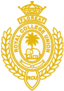
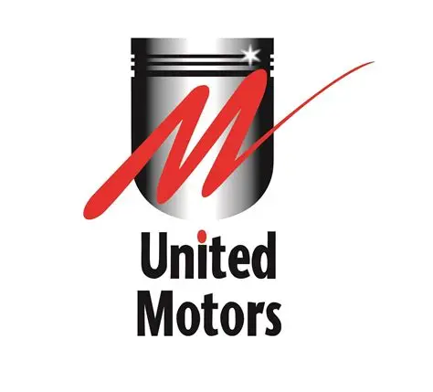
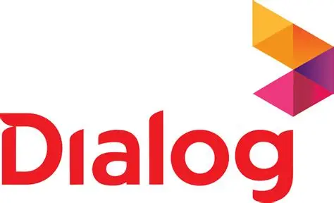

Education
Bsc. Computer Science (Undergraduate) - University of Westminster (IIT Sri lanka)
2024 Sep - Present

GCE A/L Examination 2023(2024) Physical Sciences - Royal College Colombo 07
- Chemistry
- Combined Maths
- Physics
Experience

Executive - System Support Services (United Motors Lanka PLC)
2025 April - Present
Experienced in providing comprehensive administrative and operational support within the automotive sector,
with a focus on vehicle stock management, PDI coordination, and end-to-end handling of fleet operations.
Skilled in overseeing system operations, coordinating vehicle transfers, and supporting sales processes across
the SSS Division. Demonstrates strong leadership in automotive logistics, ensuring smooth execution of
pre-delivery inspections, accurate vehicle administration, and timely project assistance. Adept at aligning
operational practices with business goals to drive efficiency and enhance service delivery within the vehicle
sales and support pipeline.

Customer Service Specialist - Dialog Axiata PLC
2024 Feb - 2024 Jul
As an Outbound Customer Service Associate at Dialog Axiata, I consistently exceeded monthly sales targets and
key performance indicators (KPIs) by delivering high-quality service, building strong customer relationships,
and maintaining in-depth product knowledge. I was responsible for driving sales, resolving customer concerns,
and supporting financial and billing operations across multiple platforms.